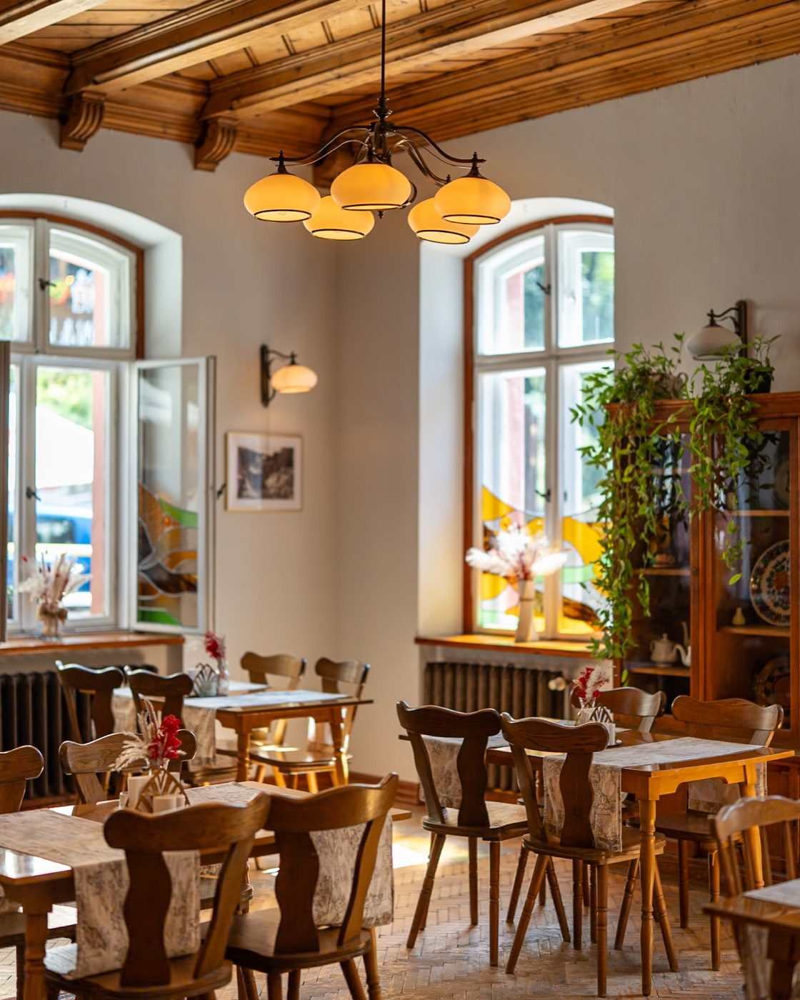

Stoisz właśnie przed ponad stuletnią willą, która na parterze skrywa Karkonoski Wyszynk - karczmę w standardzie restauracyjnym z dobrym jadłem, czeskim piwem z beczki i atmosferą, dzięki której chce się do nas wracać.
Lany Pilsner Urquell, golonka pieczona godzinami, ręcznie lepione pierogi, pieczyste, smażony ser - innymi słowy duża dawka swojskiego jadła. Brzmi dobrze? Bo smakuje jeszcze lepiej.
Powiedz obsłudze hasło, a do dowolnego dania głównego dostaniesz mały lany Pilsner Urquell z beczki lub kieliszek prosecco za 8 zł.
PRZYSŁAŁ NAS
LICZYRZEPA
Oferta na start. Dotyczy piwa 0,3 l lub kieliszka prosecco (150 ml) do dowolnego dania głównego.

ul. Jedności Narodowej 18 · parter Villa Bożena